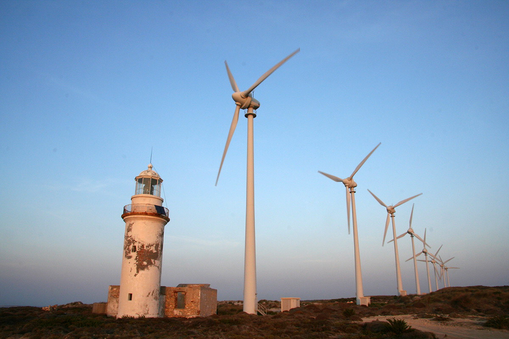

Tur Açıklaması
Bozcaada'nın rüzgârı, bağların arasından geçerken adanın hikâyelerini taşıyor gibi gelir. Gece yürüyüşünde bağcının, denizcinin ve adanın eski sakinlerinin kısa anekdotlarıyla bağların ve rüzgârın izini süreriz.
Servis Bilgileri (İstanbul kalkışlı)
İstanbul'dan servisimiz mevcuttur. Lütfen rezervasyon sırasında kalkış noktasını ve tercih ettiğiniz saati seçiniz.
- Kalkış Noktaları: Taksim (AKM yanı), Esenler Otogarı, Harem Otogarı, Alibeyköy Otogarı
- Kalkış Saatleri (örnek): 08:00, 12:00, 15:00, 18:00, 21:00
VIP Transfer & Örnek Zamanlama (İstanbul → Bozcaada)
İstanbul çıkışlı VIP transfer opsiyonumuz mevcuttur. Aşağıda nereden bineceğiniz, transfer akışı ve örnek saat planı yer almaktadır. Tüm saatler tahminidir; kesin rezervasyon için tarih ve uçuş bilgisi paylaşıldığında zamanlamayı netleştiriyoruz.
- Toplanma & Karşılama (İstanbul)
- Sizin seçtiğiniz nokta: Taksim (AKM önü) / Otel adresi / Belirtilen nokta.
- Şoför araçla 10-15 dakika önce orada olur; kısa karşılama ve bagaj yardımı yapılır.
- Araç: VIP sedan/SUV; Wi‑Fi ve ikramlar sağlanır.
- Şehir içi transfer → Havalimanı
- Tahmini sürüş süresi: 60–75 dakika (trafik buffer dahil).
- VIP karşılama ile hızlı check‑in ve FastTrack öneriyoruz; hedef: uçuş kalkışından 75–90 dakika önce havalimanında olmak.
- Uçuş ve/veya feribot (örnek)
- Bozcaada'ya uçuş+feribot kombinasyonu gerekebilir (örnek: IST → Çanakkale, ardından kara/feribot ile Bozcaada).
- Örnek saat akışı:
- 07:15 — İstanbul VIP pickup
- 08:30 — Havalimanı VIP girişi
- 10:00 — Uçuş/transfer hareketi (örnek)
- 12:30 — Varış, yerel VIP transfer veya feribot aktarma
- Yerel VIP transfer
- Havalimanından limana/feribota transfer süresi ve feribot süresi değişir; toplam transfer 60–180 dk arası olabilir.
- Varışta rehber brifingi ve tur başlangıcı.
VIP Hizmetinde Neler Dahil?
- Profesyonel şoför ve karşılama
- Konforlu VIP araç, Wi‑Fi, ikramlar
- Bagaj desteği ve öncelikli yönlendirme
- Gerekli durumlarda feribot/transfer koordinasyonu
Not: Bozcaada transferleri feribot/kara kombinasyonuna göre planlanır; rezervasyon sırasında tarih ve yolcu bilgisi paylaşın, uygun seferleri doğrulayalım.
Fotoğraf Galerisi
